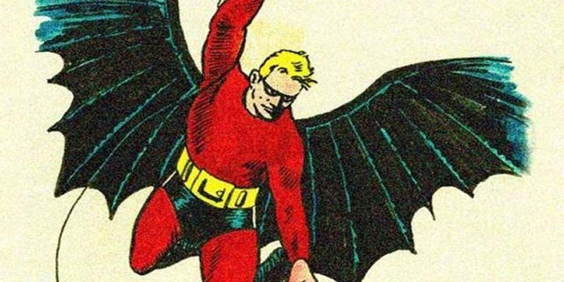
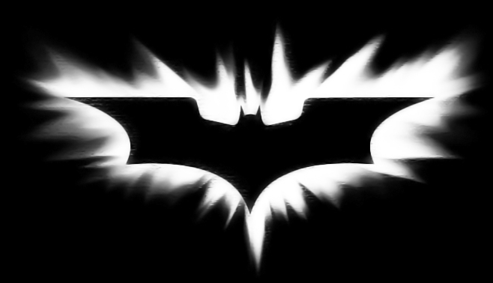
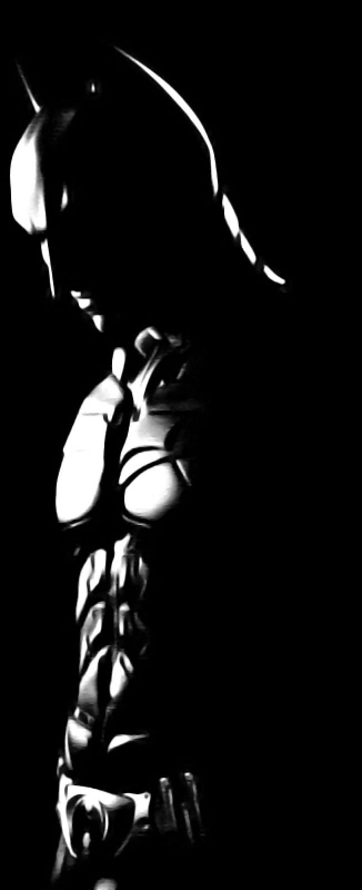
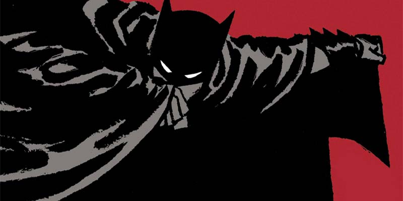
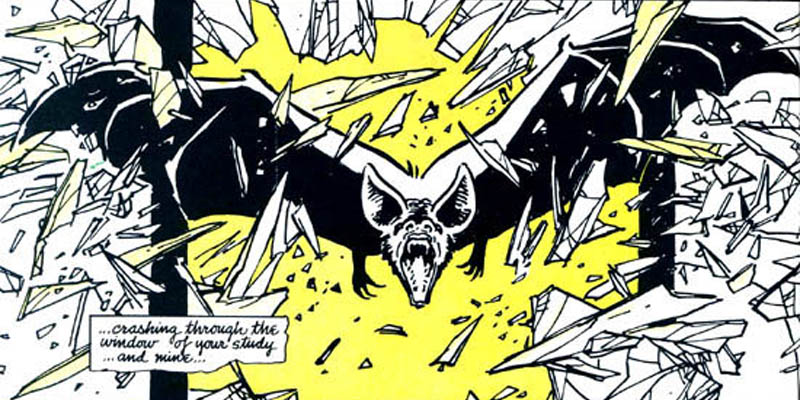
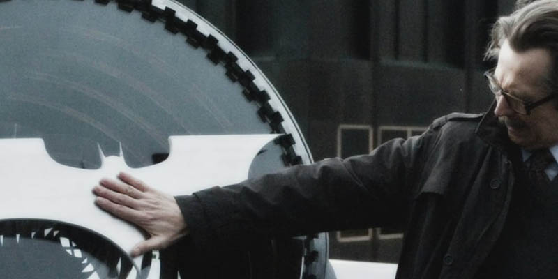
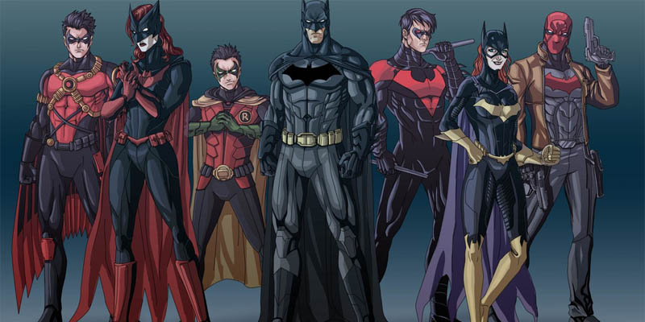
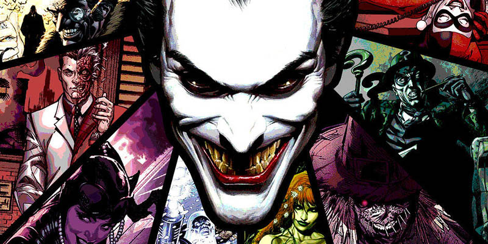
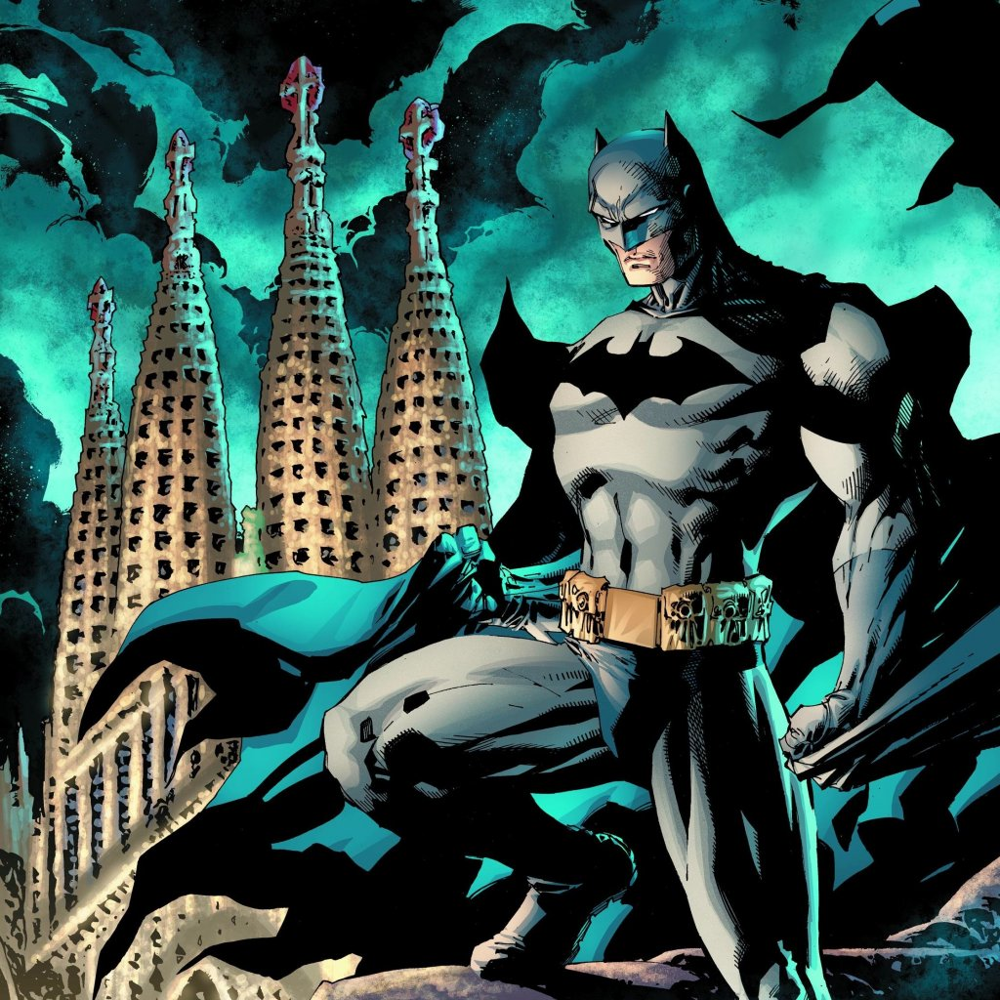
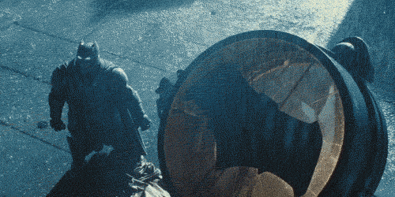

BATMAN
FAN


Kýsaca Batman Kimdir?
Kötülerin korkulu rüyasý, Gotham Þehri’nin koruyucusu, yakýþýklý bir milyoner, sivri kulaklý adalet savunucusu…
O, Batman… Küçük yaþta büyük bir trajediyle ailesini kaybeden Bruce Wayne, tanýk olduðu felaketten sonra artýk asla eskisi gibi olamayacaktý.
1938 yýlýnda Superman karakteri çizgi roman sektöründe büyük bir baþarý yakalayýnca, daha fazla süper kahraman için çalýþmalar baþladý.
Bunun üzerine Bob Kane ve Bill Finger, Superman tarzýnda kýrmýzý kostümlü, yüzü maskeli, iki sabit kanata sahip olan Batman’i yarattýlar.
Bob Kane, Batman’in bu ilk görünümünü yarattýktan sonra Bill Finger karakteri revize ederek günümüzdeki Batman’e yakýn haline dönüþtürdü.

Batman’in yaratýlmasýnda pek çok gerçek ve kurgusal karakterin rolü büyük.
Zorro, Dracula, Sherlock Holmes gibi karakterlerin yanýnda Leonardo Da Vinci gibi bir bilim insaný da Batman’in hikayesinden görünümüne kadar pek çok konuda ilham kaynaðý oldu.
Karakterin gizli kimliði olan Bruce Wayne ismi de Finger tarafýndan Ýskoçya vatanseveri Robert Bruce ve meclis üyesi Anthony Wayne’in kombinasyonu ile bulundu.
Finger’ýn revizyonundan sonra Batman karakterine çok fazla yenilik yapýlmadý.
Bu süre zarfýnda bazý bilim kurgu unsurlarý Batman hikayelerine eklense de karakterimiz en sonunda yine dedektif kökenine geri döndü.
Fakat Frank Miller, ‘Batman: Year One’ adlý dört sayýlýk mini seride, modern Batman’in ilk adýmlarýný atmýþ oldu.
Batman Begins filminin de en çok esinlendiði çizgi roman serisi olan ‘Batman: Year One’ ile Miller, Batman’in kökenini yeniden anlattý ve karakterdeki cesaret olgusunu vurguladý.

Batman’in karakteri ve görüntüsü yýllar geçtikçe deðiþikliðe uðrasa da ailesinin ölümü ve adalet peþinde olmasý gibi konular hiç deðiþmedi.
Ailesi öldükten sonra büyük bir mirasýn sahibi olan Bruce, yaþadýðý trajedi sonrasýnda ailesinin intikamýný almayý hedefledi.
Bu amaçla kimya, suç bilimi, adli týp, dövüþ sanatlarý gibi pek çok alanda kendini geliþtirdi.
Bir gün evde oturup düþmanlarýna korku salmayý düþündüðü sýrada pencereden giren yarasa, Bruce’a Batman’in ilk sinyallerini verdi.
Düþmanlarýna korku salmak için yarasa temasýyla ailesinin intikamýný almak isteyen Bruce, Gotham Þehri’nin kurtarýlmasýnýn da gerektiðini fark edip amacýný geniþletti
ve Gotham’da adaleti saðlamayý amaçladý.

Bu giriþim Gotham Polisi’nin dikkatini çekti ve ilk baþlarda hiç kolay olmadý.
Kötü karakterlerin ve þiddetin arttýðý þehirde ilk baþlarda kabul görmeyen Batman, daha sonra Gotham Polisi’nin de kahramanlarýndan biri haline geldi.
Polis Departmaný’nýn baþý Jim Gordon ile iþbirliði yapan Batman, kötüleri hapse týkmaya ve þehrini korumaya yemin etti.
Batman’in en büyük özelliði, karþýlaþtýðý kötü karakterleri öldürmeme prensibine sahip olmasý.
Öldürme eyleminin kendisini kötü karakterlerden biri gibi kýlacaðýný düþünen Batman, kötü adamlarý öldürmek yerine adalete teslim etmeyi seçti ve bu prensibinden hiçbir zaman vazgeçmedi.
Öyle ki, en azýlý düþmaný olan Joker’in kendisine, þehrine ve þehrinin insanlarýna yaptýðý onca kötülüðe raðmen ona karþý da bu prensibi uyguladý.

Batman’in Bruce Wayne’den baþka iki farklý kiþiliði daha mevcut.
Kara Þovalye karakterini yeraltý dünyasýna korku salmak için, Matches Malone karakterini ise suç mahallerine sýzmak için yaratan Bruce, bu karakterler sayesinde pek çok suçluyu yakaladý ve þehrini güvence altýna aldý.
Öte yandan, Batman yalnýz çalýþýr gibi görünse de bu pek doðru deðil.
Hatta kendisine ait bir ailesi bile mevcut. Kendisine küçüklüðünden beri baba figürü olan kahyasý Alfred Pennyworth, evlat edindiði Robin’ler Dick Grayson
Jason Todd ve Tim Drake, Gotham Polis Departmaný’nýn baþý Jim Gordon, Gordon’ýn kýzý Barbara Gordon (Oracle) ve son olarak kendisine ekipman saðlayan Lucius Fox,
Batman’in Gotham’ý korumasý yolunda en yakýn yardýmcýlarý konumunda. Bununla birlikte, aralarýnda Superman, Wonder Woman, Flash gibi kahramanlarýn bulunduðu
Justice League’in kurulmasýnda da Batman büyük rol oynadý. Fakat, Batman’in yeni ailesi ayný zamanda onun en büyük zaafý.
Daha önce korkunç bir þekilde ailesinin öldürülmesine þahit olan Bruce Wayne, bunun bir daha yaþanmamasý için aile kurmaktan kaçýndý ama
daha sonra evlat edindiði çocuklarýyla ve en yakýn dostlarýyla kendini yeniden bir aile ortamýnda buldu.
Ancak bu korkusunu yenemeyen Batman, herhangi bir tehlike anýnda ailesinin diðer üyelerini tehlikeden hep uzak tutmaya çalýþtý.
Bu kiþiler Nightwing, Red Hood, Robin gibi kahramanlar olsa bile.

Batman’in özel bir gücü yok. Superman gibi uçamýyor, gözlerinden lazer çýkaramýyor ya da Flash gibi ýþýk hýzýna sahip deðil.
Fakat ustalaþtýðý pek çok alan, kullandýðý ekipmanlar ve zekasý sayesinde en az özel güçlere sahip kahramanlar kadar önemli bir karakter.
Ayný zamanda üst insaný temsil eden Batman; Batmobile, Batcycle, Batplane gibi son teknolojiyle donatýlmýþ araçlara ve Batarang, Grapping Gun,
Explosive Gel gibi kullanýþlý aletlerin olduðu Utility Belt’e sahip oluþuyla Gotham’ýn en büyük koruyucusu.
Batman her koþulu düþünen ve her koþula hazýrlýklý olan bir kahraman.
Öyle ki, yakýn arkadaþý Superman’e karþý hazýrda bulundurduðu Kriptonit yüzüðe ve zýrha sahip. Her ne kadar Superman, iyiliðin ve adaletin en büyük temsilcisi olarak bilinse de
herhangi bir soruna karþý her zaman tetikte olan Batman çoktan önlemini almýþ durumda.
Batman gibi Batman’in düþmanlarý da çizgi roman dünyasýnda oldukça ünlü. Joker, Harley Quinn, Penguin, Riddler ve daha fazlasý…
Bu karakterlerin en önemli özellikleri ise kötü olmalarýna karþýn oldukça renkli olmalarý.
Batman’in karanlýk ve karamsar yönüne karþýlýk renkli ve neþeli olan bu kötü karakterler, Gotham Þehri’ne kötülük saçmakta ustalar.

Batman’in þehri olarak bilinen Gotham ise New York, Chicago, Boston ve Pittsburgh gibi þehirlerden türetilen kurgusal bir þehir.
Suç oraný oldukça yüksek olan Gotham, Amerika’nýn kuzeydoðusunda bulunur. Superman’in aydýnlýk, fütüristik olan Metropolis þehrinin de tersi olarak kabul edilir.
New York’un geçmiþindeki suç oranýna ithafen, Gotham’ýn New York’un gece hali olduðu benzetmesi de yapýlýr.
Týpký Superman’in, þehri Metropolis’in özelliklerini taþýdýðý gibi Batman de Gotham gibi karanlýk, karamsar ve korkutucudur.
